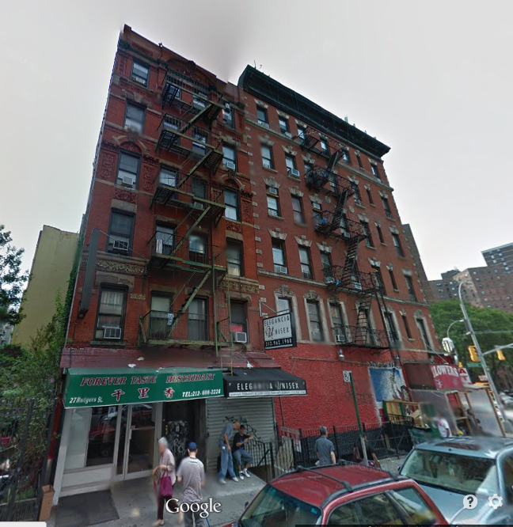

This map shows all the homes that have been nice enough to house me during my two year stay in New York City.
Click an house to learn more!
Chinatown Home-Stay

Address: 27 Rutgers St. Neighborhood: Chinatown Time Spent: 1 year Info: This is where I live now. I live on the 2nd floor of a Chinatown walk-up, above a Chinese food restaurant called "Forever Taste." I love the area, I get to practice Chinese and I live two blocks from the East River.